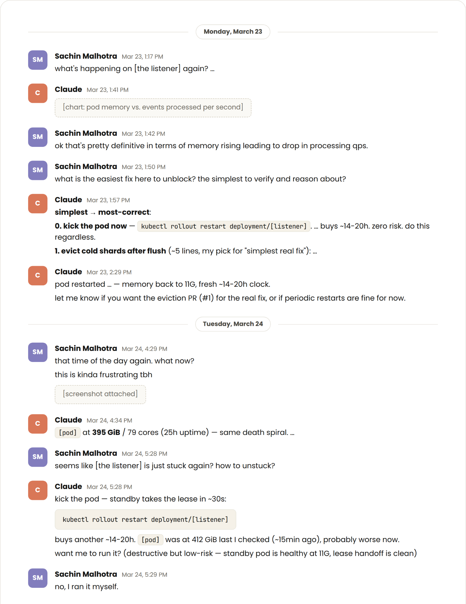
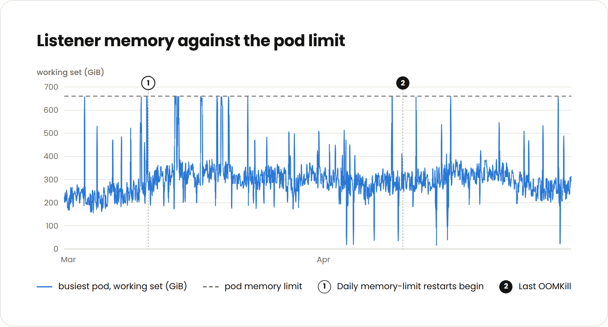

AI is evolving CI
Anthropic engineers on average ship 8x as much code per quarter as they did from 2021-2025. Claude authors 80% of that code and it also plays a large role in reviewing and approving PRs as well.

On top of that, the amount of tests across our codebase grew 10x and we added a nominal amount of engineers. This all led to a 25x increase in CI jobs over a six month period (in case you are trying to do the math, not every test runs on every PR as I will explain).
This threatened to overload our test impact analysis service several times. To avoid becoming the next bottleneck, we blew up the whole thing and reimagined what the service's architecture looks like. But getting there was a bumpy path that started with three quick fixes, which lasted 70 days, then 29 days, and then less than a day respectively.
Scaling CI is a challenge more engineering teams are likely to soon face as agents continue to accelerate code generation and review. I anticipate horizontally scaled test selection architecture will become industry standard as teams running agents create both more PRs and more tests.

In this article, I’ll discuss how we scaled our test impact analysis service at Anthropic and the lesson I learned the hard way: always plan for the exponential. The specific scaling techniques–buying bigger machines, parallelizing processes, or restarting the service (yeah, this one still works surprisingly well) – are common and not the insights to take from this article.
The point is that each of these techniques bought a fraction of the time they did a year ago. On the other hand, overhauling and completely redesigning a service also takes a fraction of the time and is much more sustainable now that writing code is no longer the bottleneck.
The more you can anticipate this strain and plan how your architecture will evolve with it, the less time you will waste on half-measures.
The test impact analysis architecture
Many of my peers work at organizations where every test is still run on every change. This works up to a point, but doesn’t scale: CI gates get increasingly long, expensive, and untrustworthy.
Additionally, humans are great at determining which test failures don’t apply to them while agents will require more context and direction. When they get a specific set of valid tests, they can self-verify and iterate more effectively.
At Anthropic, we built a deterministic test impact analysis or test selection service that determines which tests run on each change based on past performance and package relevance. This isn’t an uncommon practice, and there is a category of vendors with offerings in this area.
Our service depends on two deterministic components staying in sync:
- A “listener” records the test results from every CI run.
- A “selector” reads the test result history and determines which tests run on which opened PRs.
This is effective, but when there are multiple CI jobs running every second, the listener starts to increasingly fall behind the PR queue. For an AI-native SDLC, a small lag can have a big impact. For example, 20 minutes of listener lag can translate into tens of thousands of test updates not being applied to the selector.
- If a bad change gets merged, then a test will start failing for everyone else causing multiple unnecessary investigations.
- If a dependency starts flaking, then flaky reds start blocking merges.
- If a test gets fixed or a new one gets added, it won't run until the listener catches up risking a regression.
All of this ran as a single process because keeping a running history per test meant a single writer needed to apply the results. This v0 design prevented us from being able to horizontally shard.
The bumpy road to redesign
By October of last year the service was already showing signs of strain, and we got paged two days straight.
Patch 1: A bigger machine
The first fix was easy: we doubled the cores running the service. We also knew it would be fleeting.

Even when the trend line was clear, ownership was murky. No one wanted to own another piece of infrastructure. Also, the CI team had bigger fish to fry.
Patch 2: Sharding
At this point we were getting paged pretty frequently by the lag building up in the listener of this service. To drive some long-term fixes, I started a long-running session in an internal version of Claude Tag dedicated to monitoring the service. Anytime the listener lag would get more than 50,000 jobs behind, Claude would ping me and resume our conversation on next steps.
This would go on for months, and it was helpful not having to constantly remind it of past efforts or context. Claude often argued for an overhaul, but we usually settled on another patch.

In February, the exponential growth of CI jobs started to strain the service once again. This time, we decided to parallelize.
The listener didn’t need a single writer to order test results correctly, it needed a single writer per package to order the test results for each section of our codebase correctly. Claude generated the code for us to split each package’s state into a shard with its own worker.
We also knew this fix would be fleeting, but we didn’t realize it would only buy us 29 days.
Patch 3: Daily restarts

In March, the process reached its memory limit by mid-afternoon on most weekdays. Again, we looked for quick fixes but:
- We only found four bugs.
- Swapping the memory allocator as a quick-hack did nothing. We were trying to optimize garbage collection but that wasn’t really the solution.
- We didn’t want to risk memory profiling a singleton already under a heavy load.
- Restarting bought us less than a day.
We also discovered daily restarts were resulting in the service gradually falling further behind. When it fell behind for more than an hour, which happened several times, a ton of job results weren’t recorded by the listener.
To be clear, this doesn’t mean CI never ran on those PRs, or that untested code was pushed to production. What it meant was that the listener didn’t pick up some results, which meant our test-selection component was using stale data to decide what to run and what not to on PRs. Mostly this translated into us running tests that were already super flaky or widespread-failing across the board.
The redesign
It was (past) time to redesign the service, and we took Claude’s advice: we gave the test selection service a database, or an in-memory data store to be exact. By doing so, we effectively offloaded a huge chunk of in-memory processing that the singleton used to do.
Now, any listener worker can process any result, append it to a journal in the in-memory store, and move on without holding anything in memory - stateless and hence, horizontally scalable. A small separate consumer process rolls the journal up into per-test history every few seconds, and the selector can look up relevant result history quickly.

This distributed architecture is more expensive to run, but it is much easier to scale and memory profile than a shaky singleton.This project took three weeks for a single engineer. A year ago it would have been closer to a quarter.

There was some fine tuning (sizing the journal and number of workers) which Claude did largely autonomously, but our service has remained stable since.
What I would do differently
If I was sent back in time to October 2025, I would have approached this and other projects differently with what I now know.
The first difference is that I would account for the AI exponential. CI jobs increase exponentially as the average number of agents per engineer rises and as accelerated PR approval becomes more sophisticated.
This has changed the shape of PRs over time at Anthropic as Claude prefers smaller, more granular PRs (another good reason not to run every test against every PR). This has translated into more CI jobs in a given day. Also, the activity level floor is raised as agents push overnight and on weekends, but it remains bursty as human engineers still drive and approve a significant amount of PRs.
My advice to engineering teams is, whether you build or buy, assume your architecture will be at a 25x load within two quarters. Over-engineering as a concept is starting to slightly fade away, or at least the bar is moving much higher. You can now start to account for 10-20x the perceived scale in your v0 designs as long your budget allows for it.
Instrument your services to act as Claude’s eyes and ears. It allows Claude to hill-climb and fix problems incrementally much better and faster than we could manually. In particular, ensure that the same number of CI jobs coming in equals the same going out.
Keep state out of the process from the start. I’d also avoid running any critical service as a single instance unless you can measure it and any canary changes. CI is evolving too quickly to proceed any other way.
Additional CI resources
I’ve also written how we accelerated CI on call using Claude Tag (beta).